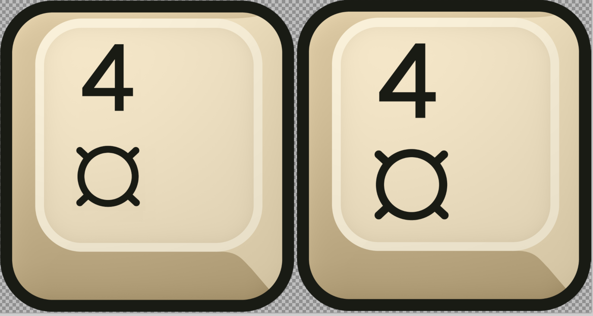

Current standard / 115% ivory
Approved November 6: 115% glyphs, scaled strokes, a 117px gap, current ivory, and the solid 44px border.
The border now has both even geometry and even color: 44px wide, with one solid #191b14 ink color matching the symbols. No lighting gradient remains on the border.
The approved November 6 standard uses 115% glyphs with scaled strokes and a 117px vertical gap. The current ivory material is unchanged. The canonical download is logo.png. The new four-image set and ZIP. The October 31 standard and all earlier versions remain preserved.
Approved November 6: 115% glyphs, scaled strokes, a 117px gap, current ivory, and the solid 44px border.
The preceding proportional standard at 100% glyph size, preserved byte-for-byte.
The earlier standard, preserved with its original larger glyphs and heavier 4.
The previous study: both glyphs at about 26px stroke width.
Your exact proportional layout with the original stroke weights: the 4 is heavier than the circle.
